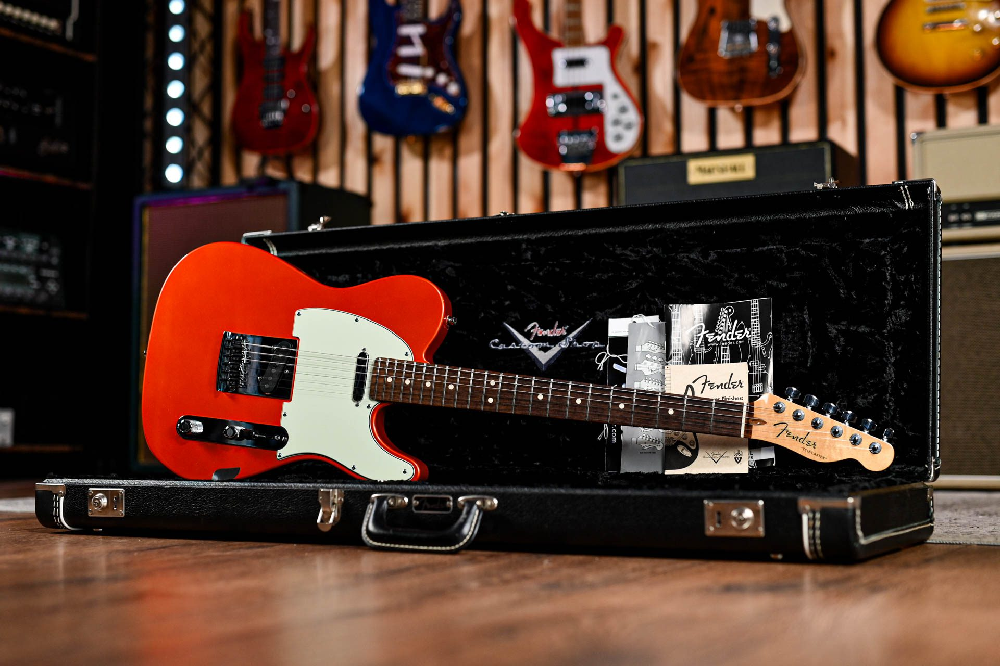

Les Paul

Created by guitarist Les Paul and Gibson president, Ted McCarty, it was introduced to compete with Fender's Telecaster guitar in 1952.
| Pros | Cons |
|---|---|
| Beautiful, iconic sound | Usually very heavy |
| Incredible sustain compared to other guitars | Less ergonomic body shape |
| Premium feel and strong build | Less ideal upper fret access |
| Versatile Dual-Humbucker Configurations | Warm tone can get lost in the low end |

Billie Joe Armstrong with his iconic Gibson on set for American Idiot
Telecaster
| Pros | Cons |
|---|---|
| Iconic, Versatile Tone | Sound Can Be Bright or Harsh |
| Simple, Reliable Design | Single-Coil Hum Can Be Noisy |
| Excellent Playability | The Slab Body Isn’t Ergonomic |
| Cuts Through a Band Mix | Bridge Design Can Be Polarizing |

George Harrison during The Beatles' rooftop concert